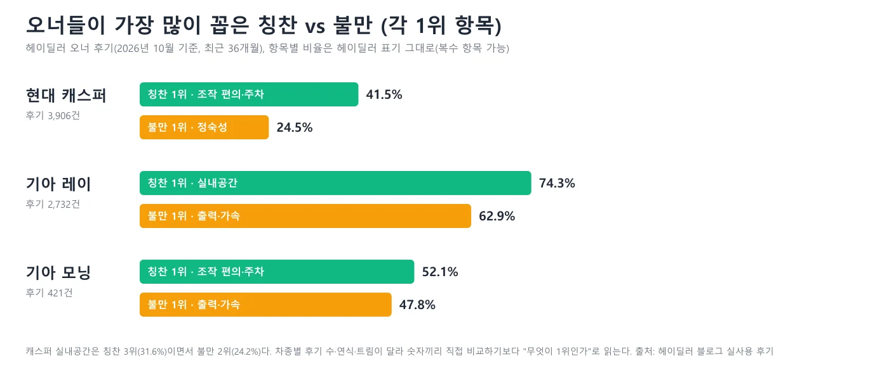
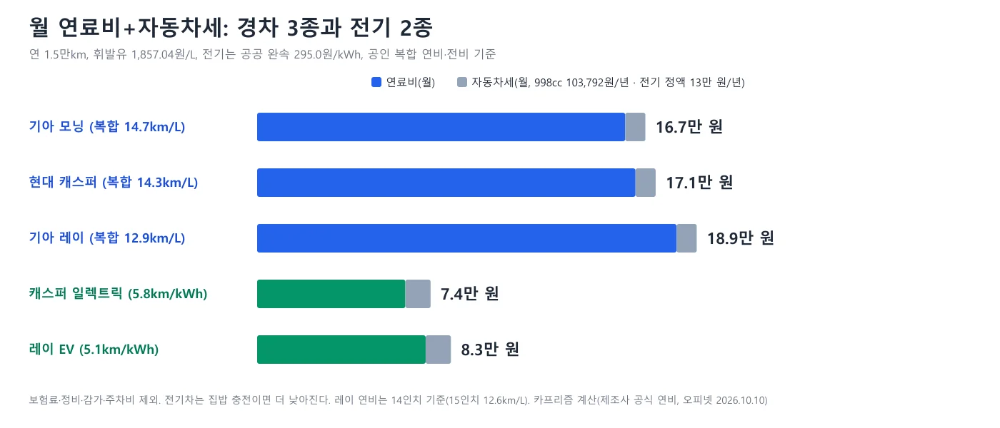
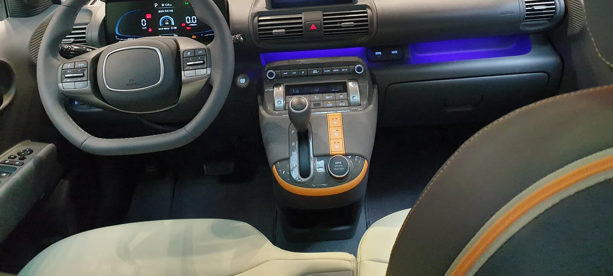
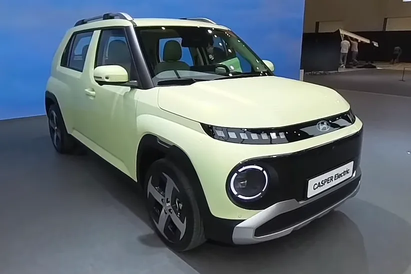
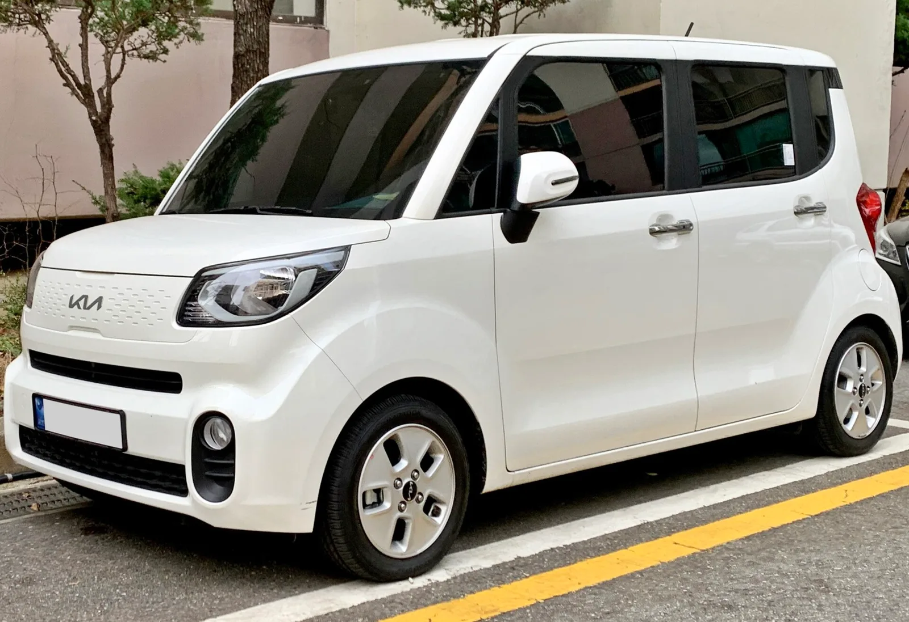
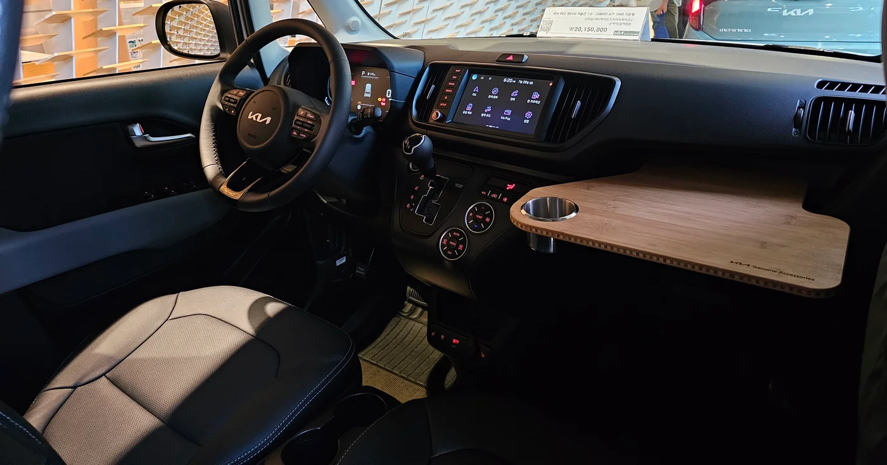
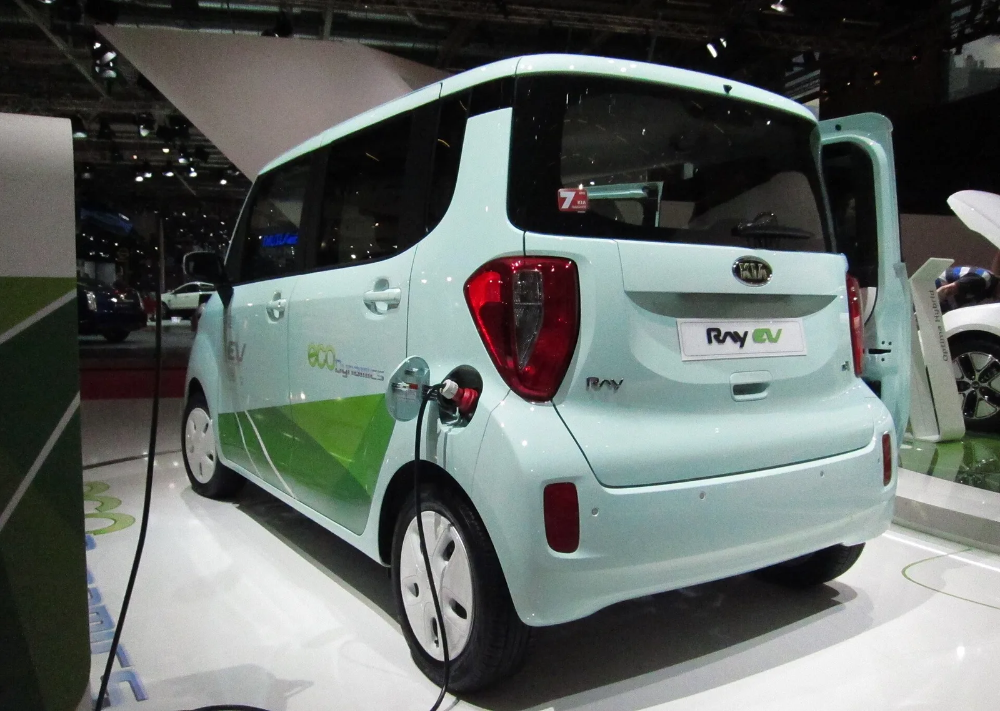
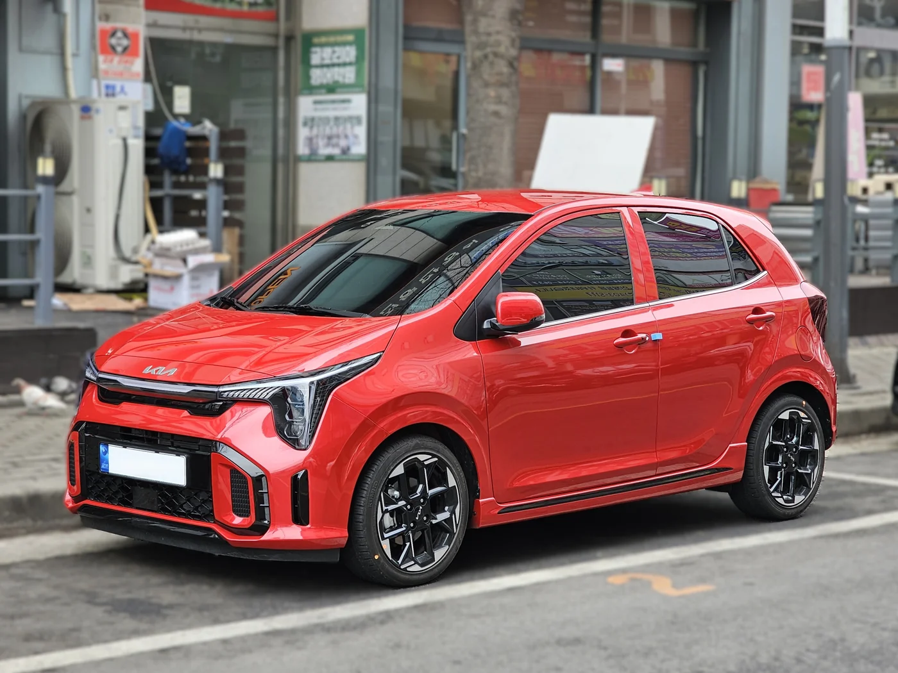
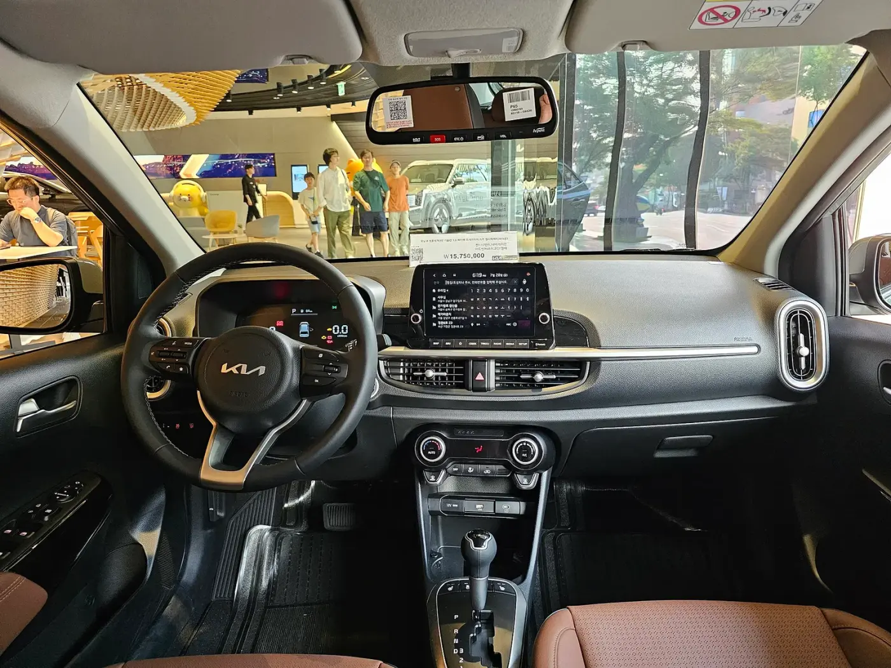
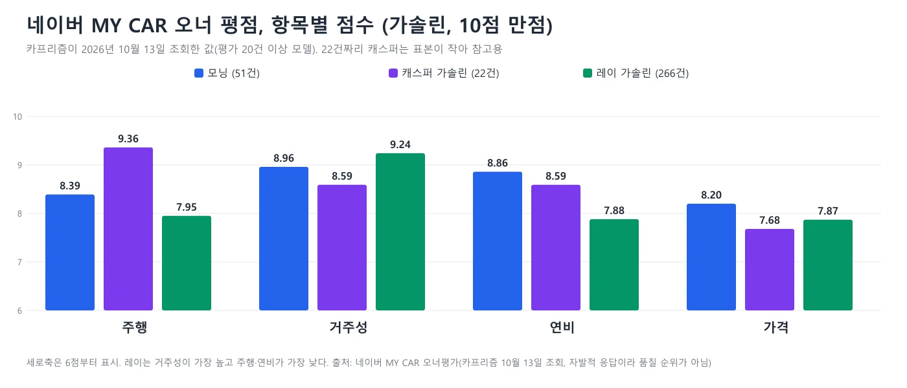

▲ 왼쪽부터 현대 캐스퍼, 기아 레이, 기아 모닝(연식·트림은 확정하지 않는다). 번호판은 가림 처리했다 ⓒ Benespit(캐스퍼·레이), Nord794ub(모닝) / Wikimedia Commons (CC BY-SA 4.0)
"경차 사려고 가격표를 봤더니 1,400만 원대인데, 견적서에는 왜 1,500만 원이 넘지?" 경차를 사려는 사람의 고민은 대개 여기서 시작해 세 갈래로 번진다. 모닝이 제일 싸다는데 레이가 더 잘 팔리는 이유, 캐스퍼는 예쁘지만 좁다는 말이 맞는지, 그리고 전기 경차가 지금 사도 되는 차인지다. 이 글은 그 고민에 실제 오너 후기를 먼저 깔고, 그 위에 공식 가격표와 제원을 덮는 순서로 답한다. 후기는 헤이딜러 '타본 사람들 이야기'에 올라온 오너 후기 7,059건(캐스퍼 3,906건·레이 2,732건·모닝 421건)의 집계와 인용 후기를 썼고, 가격·연비는 2026년 10월 16일 확인한 제조사 공식 페이지 기준이다.
1. 한눈에 보는 결론표 — 가격·연비·크기·오너 후기 한 장
아래 표의 가격은 제조사 공식 페이지의 승용 시작 트림이다. 칭찬과 불만은 헤이딜러가 집계한 후기 항목 중 1위만 뽑았고, 비율은 헤이딜러가 항목별로 표기한 값이다(복수 항목이 가능해 합이 100%가 아니며, 산정 분모는 원문에 명시되어 있지 않다). 헤이딜러 표는 칭찬 TOP 5와 불만 TOP 5를 좌우 두 열로 나눠 보여 주며, 같은 항목 이름(예: 실내공간)이 양쪽에 다 나올 수 있다.
| 구분 | 기아 모닝 | 현대 캐스퍼 | 기아 레이 |
|---|---|---|---|
| 시작가(승용) | 트렌디 1,421만 원 | 스마트 1,546만 원 | 트렌디 1,555만 원 |
| 밴 시작가 | 트렌디 1,386만 원 | 스마트 1,470만 원 | 1인승 트렌디 1,480만 원 |
| 공인 복합연비 | 14.7km/L | 14.3km/L(15인치)·13.8km/L(17인치) | 12.9km/L(14인치)·12.6km/L(15인치) |
| 전장×전폭×전고 | 3,595×1,595×1,485mm | 3,595×1,595×1,575mm(겟차 정리 제원) | 3,595×1,595×1,700mm |
| 축거 | 2,400mm | 2,400mm(겟차 정리 제원) | 2,520mm |
| 후기 1위 칭찬 | 조작 편의·주차 52.1% | 조작 편의·주차 41.5% | 실내공간 74.3% |
| 후기 1위 불만 | 출력·가속 47.8% | 정숙성 24.5% | 출력·가속 62.9% |
| 후기 표본 | 421건(오너 연령 50대 이상이 절반 넘음) | 3,906건(2023년식 53.4%) | 2,732건(40대 41.8%) |
| 이런 사람에게 | 출퇴근·시장·병원 위주, 월 비용 최소화 | 시야·디자인·"경차 같지 않은" 인상을 원하는 사람 | 짐·카시트·반려견·레저 등 공간이 먼저인 사람 |

▲ 차종별 후기 1위 칭찬과 1위 불만. 각 차종의 칭찬 1위와 불만 1위만 표시했다. 캐스퍼 실내공간은 칭찬 3위(31.6%)이자 불만 2위(24.2%)다. 카프리즘 제작(헤이딜러 후기 집계 기반)
표에서 먼저 눈에 띄는 것은 세 차의 엔진 출력이 같다는 점이다. 기아 모닝 제원 페이지는 998cc, 76ps, 9.7kgf·m, 4단 자동변속기를 적고, 기아 레이 제원 페이지도 같은 76ps·9.7kgf·m이며, 캐스퍼(겟차 정리 제원)도 같은 수치다. 그런데 출력·가속 불만은 레이 62.9%, 모닝 47.8%로 다르다. 이유는 아래 7장에서 풀지만, 미리 한 줄로 말하면 "같은 엔진이 서로 다른 무게와 차체를 끌고 있다"이다.
2. 경차라서 받는 혜택 — 가격표에 없는 숫자
세 차를 비교하기 전에 알아 둘 것은, 경차의 진짜 가격이 가격표와 다르다는 점이다. 경형 규격(배기량 1,000cc 미만, 길이 3.6m·너비 1.6m·높이 2.0m 이하. 전기차는 배기량 대신 모터 최고출력 기준을 쓴다)을 충족하면 취득세, 개별소비세, 자동차세, 통행료, 공영주차장, 유류세까지 여러 군데서 차이가 난다. 각 제도의 법령 근거와 5년 합계는 "경차 한 대 5년 타면 얼마가 남나?" 기사에서 계산했고, 여기서는 구매 결정에 필요한 것만 추렸다.
| 항목 | 내용 | 시한·조건 | 구매자에게 의미 |
|---|---|---|---|
| 취득세 | 세액 75만 원까지 면제, 초과분은 75만 원 공제 | 2027년 12월 31일까지. 부가세 제외 가격 약 1,875만 원(판매가 약 2,062.5만 원)까지 전액 면제 | 모닝 GT-Line(1,911만 원)·캐스퍼 인스퍼레이션(2,035만 원)·레이 X-Line(2,060만 원)은 옵션 없이는 0원. 옵션을 얹어 2,062.5만 원을 넘으면 초과분만 낸다 |
| 개별소비세·교육세 | 경형자동차는 과세 대상 제외 | 가격표에 이미 반영 | 따로 신청할 것은 없지만 일반 승용차와 같은 값으로 비교하면 안 된다 |
| 자동차세 | cc당 80원(998cc 기준 연 79,840원, 지방교육세 포함 103,792원) | 1,598cc 일반 승용(연 290,836원) 대비 연 187,044원 낮음 | 1월 연납을 쓰면 추가 공제. 자동차세 연납 기사 참고 |
| 고속도로 통행료 | 경형자동차 50% 할인 | 하이패스 단말기 정보 등록이 필요한 경우가 있음 | 장거리·출퇴근 통행이 잦을수록 체감이 큼 |
| 공영주차장 | 지자체별 50% 안팎 감면 | 민간 주차장은 적용 여부가 제각각 | 우리 동네 조례와 주차장 운영 방식을 확인 |
| 유류세 환급 | 리터당 250원, 연 30만 원 한도 | 2026년 12월 31일 일몰, 연장 법안은 9월 7일 발의 상태(미통과) | 연말에 끝나면 연 30만 원이 사라지는 구조라 계약 시점의 연장 여부 확인 필수 |
| 보험료 할인 | 경차 보험료 할인은 이번 조사에서 공식 자료로 확인하지 못했다. 차종 등급·연령·특약에 따라 달라지므로 견적을 직접 받아야 한다 | ||
⚠️ 캐스퍼 일렉트릭은 "경차 같지만 법적 경차가 아니다"
경형 규격의 전장은 3.6m 이하, 전폭은 1.6m 이하인데 캐스퍼 일렉트릭은 전장 3,825mm(트림별 3,825~3,845mm)·전폭 1,610mm로 두 기준을 모두 넘는다. 그래서 위 혜택표를 그대로 적용할 수 없고, 전기차 쪽 감면과 보조금으로 따로 계산해야 한다. 레이 EV는 전장 3,595mm·전폭 1,595mm·전고 1,710mm에 모터 최고출력 64.3kW(기아 제원)로, 같은 기준에 들어가는 경형이다. 판정 근거는 경차 혜택 5년 합계 기사에 있다. 취득세·개소세의 일반 구조가 헷갈리면 취득세·개별소비세 계산법 기사를, 유류세 환급과 직결되는 주유비는 유류세 인하 연장 기사를 보면 된다.
월 연료비와 세금: 가격차를 몇 년이면 메우나
가격표가 아닌 "한 달 비용"으로 바꿔 보면 차이가 더 선명하다. 아래는 연 1만 5,000km, 휘발유 1,857.04원/L(오피넷 전국 평균 2026.10.10), 공인 복합연비를 쓴 계산이다. 연료비 = 15,000 ÷ 복합연비 × 1,857.04원이고, 자동차세는 998cc 기준 연 103,792원을 12로 나눴다. 전기차는 공공 완속 295.0원/kWh, 공인 복합 전비(캐스퍼 일렉트릭 프리미엄 5.8km/kWh, 레이 EV 5.1km/kWh), 자동차세 연 13만 원 정액(기아 안내 기준 참고값)을 가정했다. 보험료·정비·감가·주차비는 뺐다.
| 차종(공인 연비·전비) | 연 연료비 | 월 연료비 | 월 자동차세 | 월 합계 | 유류세 환급(연 한도 내) 받으면 |
|---|---|---|---|---|---|
| 모닝(14.7km/L) | 1,894,939원 | 157,912원 | 8,649원 | 약 16.7만 원 | 약 14.5만 원 |
| 캐스퍼(14.3km/L) | 1,947,944원 | 162,329원 | 8,649원 | 약 17.1만 원 | 약 14.9만 원 |
| 레이(12.9km/L) | 2,159,349원 | 179,946원 | 8,649원 | 약 18.9만 원 | 약 16.4만 원 |
| 캐스퍼 일렉트릭(5.8km/kWh) | 762,931원 | 63,578원 | 10,833원 | 약 7.4만 원 | 환급 대상 아님(휘발유 환급) |
| 레이 EV(5.1km/kWh) | 867,647원 | 72,304원 | 10,833원 | 약 8.3만 원 | 환급 대상 아님(휘발유 환급) |

▲ 월 연료비+자동차세. 가솔린 3종은 월 16.7만~18.9만 원, 전기 2종은 7.4만~8.3만 원이다(공공 완속 충전 가정, 집 충전이면 더 낮아짐). 카프리즘 제작
이 표를 가격과 겹치면 "무엇을 사는 값인가"가 보인다. 레이 트렌디(1,555만 원)는 모닝 트렌디(1,421만 원)보다 134만 원 비싸고, 공인 연비 차이 때문에 연료비도 해마다 약 26만 원(264,410원) 더 든다. 5년이면 연료비 차이가 약 132만 원이므로 가격차와 합쳐 약 266만 원, 한 달로 나누면 약 4.4만 원이다. 이 돈은 "레이의 높은 천장과 슬라이딩 도어, 넓은 실내를 쓰는 값"으로 읽는 게 맞다. 캐스퍼 스마트는 모닝 트렌디보다 125만 원 비싸고 연료비는 연 약 5.3만 원 더 들어 5년 약 152만 원(월 약 2.5만 원) 차이지만, 캐스퍼 스마트는 버튼시동·스마트키가 기본이고 모닝 트렌디에는 버튼시동 PACK이 선택품목(50만 원)이다. 그 옵션을 넣으면 모닝은 1,471만 원이 되어 격차가 75만 원으로 줄어든다. 중고 시세 방어(감가)는 이 계산에 넣지 못했다.
3. 현대 캐스퍼 — 경차 같지 않다는 칭찬과 뒷자리에서 갈리는 평가

▲ 가솔린 캐스퍼(연식·트림은 확정하지 않는다). SUV 같은 높은 시야와 둥근 후미등이 후기에서 "경차 같지 않다"는 말의 출처다 ⓒ Benespit / Wikimedia Commons (CC BY-SA 4.0)
먼저 오너들의 목소리
헤이딜러 캐스퍼 후기 3,906건(평균 보유 1년 10개월, 평균 주행거리 23,383km, 2023년식 53.4%)에서 가장 많이 나온 칭찬은 조작 편의·주차(41.5%)이고, 이어 출력·가속(39.7%), 실내공간(31.6%), 디자인(30.9%), 가성비(26.2%) 순이다. 가장 많이 나온 불만은 정숙성(24.5%)이고 실내공간(24.2%), 출력·가속(14.6%), 승차감(13.7%), 연비(12.1%)가 뒤를 잇는다. 즉 캐스퍼의 실내공간은 불만보다 칭찬으로 더 많이 언급됐고, 출력·가속도 칭찬 2위에 올라 있다(표본의 터보 비중이 높은 영향일 수 있다).
| 구분 | 후기 요지 | 오너 정보 |
|---|---|---|
| 👍 만족 | 동급 경차보다 승차감이 좋고, 미니 SUV 형태라 전면 시야가 좋다 | 40대·2023년식 모던·2년·2.4만km |
| 주차가 편하고 공영주차장·세금이 싸다. "경차 혜택은 받으면서 경차처럼 안 보인다" | 30대·2023년식 1.0 터보 인스퍼레이션·6개월·1.7만km | |
| "공간성을 제외하면 최고의 경차". 다만 같은 후기에서 컴포트 옵션이 있으면 성인 남성 4명이 타도 그리 좁지 않다고 썼다 | 30대·2023년식 1.0 터보 디 에센셜·8개월·1.0만km | |
| 👎 아쉬움 | 4단 자동변속기가 이상한 타이밍에 변속된다는 점이 단점 | 같은 30대 터보 디 에센셜 오너 |
| 생각보다 소음이 있고, 실내 폭이 좁아 덩치 있는 남성은 갑갑할 수 있다. 터보 옵션이 없으면 오르막이 다소 답답할 수 있다 | 40대·2023년식 모던·2년·2.4만km | |
| 방지턱에서 충격이 크고(승차감 항목), 에어컨을 켜면 진동이 더 심해진다(정숙성 항목)는 헤이딜러 항목별 인용 후기 | 오너 정보 미표기(항목 인용문) |
후기를 겹쳐 보면 캐스퍼의 만족은 "작은데 작아 보이지 않는다"는 인상에서, 불만은 "작아서 어쩔 수 없는 부분이 생각보다 도드라진다"에서 나온다. 같은 오너(40대 모던)가 승차감은 칭찬하고 소음과 실내 폭은 아쉬워했다는 점이 이 차의 성격을 잘 보여준다. 한 가지 더, 후기 표본의 트림 분포에서 1.0 터보 두 트림이 62.9%(인스퍼레이션 44.9%+디 에센셜 18.0%)다. 오너 후기 중 "터보옵션을 선택하지 않았을 경우 오르막이 다소 답답하다"는 문장이 있다. 2026.7.15 현대차 보도자료의 기본 모델 가격(스마트·디 에센셜·인스퍼레이션)에는 터보가 표시되지 않지만, 겟차(10월 12일 기준)와 카위키 정리에는 같은 트림에 캐스퍼 액티브Ⅰ·Ⅱ를 더한 1.0 터보 구성(복합 12.8·12.3km/L)이 따로 올라 있다. 즉 "가속이 괜찮았다"는 터보 오너의 후기를 시작가 1,546만 원짜리 자연흡기 차에 그대로 대입하면 안 된다.
그 이야기를 공식 숫자로 풀면
| 트림 | 판매가 | 공인 복합연비 | 후기와 연결해 보면 |
|---|---|---|---|
| 스마트 | 1,546만 원 | 14.3km/L(15인치) | 버튼시동·스마트키·원격시동 기본. "경차 값에 시야와 디자인"을 산 사람에게 |
| 디 에센셜 | 1,792만 원 | 14.3km/L(15인치) | 카프리즘 3년 비용 기사가 비교 기준으로 쓴 입문 트림. 스마트와 246만 원 차이 |
| 인스퍼레이션 | 2,035만 원 | 13.8km/L(17인치 기본) | 17인치 타이어 탓에 연비가 더 낮고, 방지턱 충격 후기와도 겹치는 지점 |
| 1.0 터보(액티브Ⅰ·Ⅱ 구성) | 스마트+액티브Ⅰ 1,641만 원, 디 에센셜+액티브Ⅰ 1,887만 원, 인스퍼레이션+액티브Ⅱ 2,125만 원 | 12.8·12.8·12.3km/L | 겟차·카위키 정리 기준(현대차 공식 페이지는 접속 오류로 확인 못함). 후기 표본의 62.9%가 이 터보 계열. 인스퍼레이션+액티브Ⅱ는 취득세 면제 한도(약 2,062.5만 원)를 넘는다 |
| 밴 스마트·스마트 초이스 | 1,470만·1,570만 원 | 14.3km/L(밴 스마트, 겟차 정리 제원) | 적재 위주 구성. 시트·적용 혜택 세부는 확인하지 못함 |

▲ 현대 캐스퍼 실내(전시차, 파일명 기준 가솔린 캐스퍼 톰보이 카키 색상 구성). 트림은 확정하지 않으며, 방문객이 보이지 않도록 윗부분을 잘랐다 ⓒ Damian B Oh / Wikimedia Commons (CC BY-SA 4.0)
여기서 후기의 "연비 12.1% 아쉬움"이 설명된다. 인스퍼레이션처럼 큰 타이어를 달면 공인 연비가 13.8km/L로 내려가는데, 오너 후기에도 "큰 타이어로 했더니 연비가 떨어졌다"는 문장이 있다. 반대로 칭찬 1위인 조작 편의·주차는 제원이 아니라 3,595mm 전장과 1,595mm 전폭이라는 경형 규격 자체가 답이다. 공영주차장과 세금이 싸다는 후기는 앞 2장의 혜택표 그대로다. 2026년형(7월 이전) 가격과 옵션 구성은 2026년형 캐스퍼 가격 기사에 있고, 2027년형은 스마트가 1,493만 원에서 1,546만 원으로 올랐다.
전기를 고민한다면: 캐스퍼 일렉트릭

▲ 캐스퍼 일렉트릭. 가솔린 캐스퍼보다 전장이 길어 법적 경형 기준(3.6m)을 넘는다 ⓒ jasonryudotnet / Wikimedia Commons (CC BY 3.0)
헤이딜러 캐스퍼 일렉트릭 후기는 307건(평균 보유 11개월, 평균 주행거리 15,512km, 인스퍼레이션 95.1%)이다. 칭찬 1위는 실내공간(43.6%)인데 불만 1위도 실내공간(32.3%)이다. "차 크기에 비해 실내가 생각보다 넓다"는 오너가 있는 반면, "성인 3~4명이 장거리 가기는 불편하다"는 오너도 있다. 같은 공간을 두고 기대치가 어디 있느냐가 평가를 가른다. 그 밖에 트렁크(16.9%), 승차감과 정숙성(각 13.8%, 120km/h 이상에서 소음이 커진다는 후기), 충전(9.2%)이 아쉬움으로 나왔고, 충전구가 차 앞쪽이라 충전선이 짧으면 전면 주차를 해야 한다는 오너도 있었다. 전비는 "막 타도 7 이상 찍힌다"는 오너 보고가 있는데, 공인 복합 전비(프리미엄 5.8km/kWh)보다 높은 개인 체감값이라 참고만 하자.
| 트림 | 판매가 | 1회 충전·전비(공인) | 서울 실구매가 예시 |
|---|---|---|---|
| 프리미엄 | 2,847만 원 | 42kWh·278km·5.8km/kWh | 서울 보조금 637만 원 반영 시 2,210만 원 |
| 인스퍼레이션 | 3,212만 원 | 49kWh·315km·5.6km/kWh | 같은 보조금 반영 시 2,575만 원 |
| 크로스·라운지 | 3,412만·3,457만 원 | 트림별 공식 수치는 확인하지 못함 | — |
가격이 보조금으로 내려가도 변수가 둘 남는다. 보조금은 지역마다 다르고, 출고 대기가 프리미엄 28개월까지 보도됐다(카프리즘 8월 3일 기사 기준, 이후 변동 가능). 서울 보조금 기준 3년 지출이 가솔린보다 118만 원 더 드는지, 보조금이 큰 지역에서는 뒤집히는지는 3년 지출 비교 기사에서 계산했다.
🔎 캐스퍼가 더 궁금하다면
4. 기아 레이 — 실내가 넓다는 칭찬과 언덕에서 모자란다는 불만

▲ 도로변의 기아 레이(연식·트림은 확정하지 않는다). 전고 1,700mm의 박스형 차체가 후기의 "실내가 넓다"로 이어진다 ⓒ Benespit / Wikimedia Commons (CC BY-SA 4.0)
먼저 오너들의 목소리
헤이딜러 더 뉴 기아 레이 후기는 2,732건(평균 보유 1년 5개월, 평균 주행거리 19,041km, 40대 41.8%)이다. 칭찬은 실내공간(74.3%), 조작 편의·주차(44.8%), 가성비(29.1%), 연비(16.4%), 트렁크 수납(12.4%) 순이고, 불만은 출력·가속(62.9%), 정숙성(15.1%), 연비(11.6%), 승차감(10.9%), 주행 성능(10.6%) 순이다. 연비가 칭찬과 불만에 모두 나온 것은 기대치의 차이다.
| 구분 | 후기 요지 | 오너 정보 |
|---|---|---|
| 👍 만족 | "실내 넓고 취등록세 없고 톨비 반값"에 연비는 "시내 12, 고속 18"이라는 오너 보고. 슬라이드 도어와 레저 활용도, 골목길 주행이 편하다 | 30대·프레스티지·1년 2개월·1.8만km |
| 시야가 넓어 사각지대가 아예 없고 잔고장이 없었다고 썼다. 엔진오일만 갈면 된다는 평가 | 같은 30대 오너 | |
| 경차지만 실내공간이 중형차보다 넓고 전면 시야가 확보돼 운전에 자신 없는 사람에게 좋다. 정속 주행 고속도로 연비 18~20km/L를 기록했다는 오너 보고 | 50대·시그니처·1년 2개월·1.8만km | |
| 👎 아쉬움 | "경차를 왜 샀냐"는 주변의 핀잔이 생각보다 잦다는 점. 평가가 안 좋은 게 현실이라는 오너 메모 | 30대·프레스티지·1년 2개월·1.8만km |
| 출력이 확실히 모자라 언덕에서 엔진 굉음만 나고, 급가속 차선 변경 때 동승자가 무서워한다. 반면 승차감과 소음은 "불편한 정도는 아니라고 본다" | 같은 30대 오너 | |
| 바람이 강하거나 옆으로 화물차가 지나갈 때 차가 휘청거려 무섭다 | 40대·시그니처·8개월·2.3만km |
레이 후기에서 흥미로운 점은 불만이 "성능이 나쁘다"가 아니라 "경차에 기대한 것 이상을 바랐다"에 가깝다는 것이다. 가속 불만을 쓴 같은 오너가 승차감·소음은 용인하고, 50대 오너는 시내 주행에 특화된 차량임을 알고 타면 만족할 것이라고 썼다. 만족하는 오너와 불만인 오너가 따로 있다기보다, 같은 오너가 한 장의 후기에서 칭찬과 불만을 함께 쓴다. 한편 가성비는 레이 칭찬 3위(29.1%)인데, 헤이딜러가 그 항목의 대표 인용으로 고른 문장이 "가성비로 경차를 구매하실 것 같으면 기름값 대비하여 모닝 추천드립니다"다. 앞서 계산한 134만 원 차이와 맞물리는 대목이다.
그 이야기를 공식 숫자로 풀면
| 트림 | 판매가 | 비고 |
|---|---|---|
| 트렌디 | 1,555만 원 | 1인승 밴 1,480만 원, 2인승 밴 1,490만 원부터 |
| 프레스티지 | 1,815만 원 | 트렌디와 260만 원 차이 |
| 시그니처 | 1,955만 원 | 후기 표본에서 59.8%로 가장 많은 트림 |
| X-Line | 2,060만 원 | 취득세 면제 한도(판매가 약 2,062.5만 원) 직전. 옵션을 넣으면 한도 초과 |
| 제원 | 998cc·76ps·9.7kgf·m, 4단 자동, 전장 3,595·전폭 1,595·전고 1,700·축거 2,520mm, 공차중량 1,085kg(14인치)·1,090kg(15인치), 복합 12.9km/L(14인치)·12.6km/L(15인치) | |

▲ 기아 레이 실내(전시차, 파일명 기준 그래비티). 조수석 앞의 나무 테이블은 기아 순정 액세서리로 보이며 기본 사양으로 단정하지 않는다. 창밖 인물이 보이지 않도록 윗부분을 잘랐다 ⓒ Damian B Oh / Wikimedia Commons (CC BY-SA 4.0)
"실내가 넓다"는 74.3%의 이유는 숫자에 그대로 있다. 레이는 모닝보다 전고가 215mm(1,700−1,485) 높고 축거도 120mm(2,520−2,400) 길다. 출력 불만은 같은 76ps를 공차중량 1,085kg(모닝 14인치 975kg보다 110kg, 약 11% 무거움)이 끈다는 점과 높은 차체가 맞는 바람이 설명 후보로 남는다(이는 공식 수치로 구한 편집 해석이며, 후기가 직접 이 이유를 말한 것은 아니다). 마력당 무게로 환산하면 레이는 약 70.0ps/t, 모닝은 약 77.9ps/t다. 연비도 같은 이유로 12.9km/L와 14.7km/L로 갈린다. 카프리즘 기존 레이 기사들의 1,490만 원 시작가는 2026년형 가격이고, 이번 공식 가격표(2027 레이)는 트렌디 1,555만 원이어서 계약 때 가격 기준을 다시 확인해야 한다.
전기를 고민한다면: 레이 EV

▲ 충전 중인 레이 EV(초기 세대로 보이는 전시차, 현행 2026년형과 외관이 다르다) ⓒ Rutger van der Maar / Wikimedia Commons (CC BY 2.0)
레이 EV는 이번 조사에서 헤이딜러 오너 후기 집계 페이지를 찾지 못해 후기 구성이 부족한 차종이다. 대신 네이버 MY CAR 오너 평가(카프리즘 2026년 10월 13일 조회)에서 레이 EV는 123건 종합 8.97점이다. 항목별로는 주행 9.63점·거주성 9.62점이 높고 연비 항목이 7.15점으로 낮다(항목 정의는 네이버 설명을 확인하지 못함). 가격은 4인승 라이트 2,852만 원, 에어 3,062만 원이고 국비 457만 원에 서울 지방비 137만 원을 빼면 라이트 2,258만 원이다. 1회 충전 주행거리는 기아 제원 복합 205km, 통합누리집 상온 211km·저온 176km, 전비 5.1km/kWh다. 지방비는 서울 137만 원부터 경북 울릉군 945만 원까지 160곳이 달라서 "1,400만 원대"는 울릉군에서만 맞는다. 자세한 지역별 계산은 아래 링크에 있다.
🔎 레이가 더 궁금하다면
5. 기아 모닝 — 가장 싸고 연비가 좋지만, 후기 근거는 가장 얇다

▲ 기아 모닝 부분변경 모델의 전측면(파일명 기준 GT-Line, 연식은 확정하지 않는다). 번호판은 가림 처리된 사진이다. 3,595mm 전장에 낮고 짧은 해치백 차체가 "주차 편하다"는 후기와 이어진다 ⓒ Damian B Oh / Wikimedia Commons (CC BY-SA 4.0)

▲ 기아 모닝 부분변경 모델의 실내(전시차, 갈색 시트). 연식·트림은 확정하지 않는다 ⓒ Damian B Oh / Wikimedia Commons (CC BY-SA 4.0)
먼저 오너들의 목소리
헤이딜러 더 뉴 모닝(JA) 후기는 421건으로 세 차종 중 가장 적고(평균 보유 1년 1개월, 평균 주행거리 12,910km, 50대 이상이 절반 넘음) 페이지에 원문이 노출된 후기도 3건뿐이다. 따라서 모닝은 이 글에서 후기 신뢰도가 가장 낮은 차종이고, 아래는 "그 3건이 이렇게 말했다" 수준으로 읽어야 한다. 집계 항목상 칭찬은 조작 편의·주차 52.1%, 연비 40.6%, 가성비 34.0%, 디자인 17.5%, 편의기능 16.8% 순이고 불만은 출력·가속 47.8%, 실내공간 22.4%, 승차감·정숙성 각 11.9%, 주행 성능 7.5% 순이다.
| 구분 | 후기 요지 | 오너 정보 |
|---|---|---|
| 👍 만족 | "모닝의 장점은 기동성"이다. 좁은 길과 사람이 붐비는 시장에서 편하고, "아무리 막혀도 좋은 연비"를 보여줘 경제적이다 | 50대·2024년식 프레스티지·9개월·1.0만km |
| 11개월 매일 출퇴근용으로 쓰며 "완벽한 선택"이라 평가. 정체 구간에서 스마트크루즈가 큰 도움이었고 주차가 매우 용이하다 | 40대·2024년식 시그니처·11개월·3.4만km | |
| 예전 모닝은 언덕에서 소음이 나고 힘이 빠지는 느낌이 심했지만, 새로 산 모닝은 엔진 소음이 적고 언덕도 괜찮다 | 60대 이상·2025년식 시그니처·2개월·0.1만km | |
| 👎 아쉬움 | 좁은 실내와 수납이 불편하다. "이미 다 알고 있는 단점"이라는 전제 위의 불만 | 50대·2024년식 프레스티지 |
| 국도·고속도로에서 외부 소음이 많이 유입돼 시끄럽다 | 같은 50대 오너 | |
| 키 큰 사람에게는 작게 느껴지고 뒷좌석에 남성이 타면 불편하다. 고속에서 소음이 커 장거리보다 도심에 맞는 차 | 40대·2024년식 시그니처 |
세 후기에서 가장 흥미로운 건 세 번째 만족 후기다. 이 오너는 예전 모닝과 비교해 "새 모닝은 언덕이 괜찮다"고 썼는데, 모닝의 가장 큰 불만 항목(출력·가속 47.8%)이 신형 오너 일부에게는 개선으로 느껴진다는 뜻일 수 있다. 다만 후기 1건이고 오너 개인의 비교 기억이라 일반화할 수 없고, 이 오너는 "주로 타는 차가 따로 있어 거의 세워 놓고 운행을 별로 안 했다"고 덧붙였다(2개월·0.1만km). 또 "50대 이상이 절반 넘는" 오너 구성이 후기의 톤(근거리·도심 위주 사용, 불만을 "이미 알고 있는 것"으로 소화)을 만들었을 가능성이 높다. 다른 두 차종과 후기를 곧바로 비교할 때 연령 구성이 다르다는 점은 감안하자.
그 이야기를 공식 숫자로 풀면
| 트림 | 승용 | 밴 | 선택품목 예시(승용) |
|---|---|---|---|
| 트렌디 | 1,421만 원 | 1,386만 원 | 버튼시동 PACK 50만 원, 컴포트 30만 원, 8인치 내비게이션 80만 원 등 |
| 프레스티지 | 1,601만 원 | 1,451만 원 | 드라이브 와이즈 50만 원, 8인치 내비게이션 70만 원 등 |
| 시그니처 | 1,816만 원 | — | 스타일 85만 원, 선루프 40만 원 등 |
| GT-Line | 1,911만 원 | — | 8인치 내비게이션 70만 원, 선루프 40만 원 |
| 제원 | 998cc·76ps·9.7kgf·m, 4단 자동, 전장 3,595·전폭 1,595·전고 1,485·축거 2,400mm, 공차중량 975kg(14인치)·1,010kg(16인치), 복합 14.7km/L·도심 13.5·고속 16.3, CO₂ 112g/km | ||
"연비가 좋다", "출퇴근에 완벽하다"는 후기는 공식 복합 14.7km/L와 975kg 공차중량에 그대로 얹힌다. 세 차종 중 연비가 가장 높고, 같은 76ps를 가장 가벼운 몸이 끌기 때문에 체감 가속이 레이보다는 낫다는 해석이 가능하다(후기 비율로 보면 불만 47.8% 대 62.9%). 반면 전고 1,485mm의 낮은 차체는 "실내가 좁다"는 후기와 짝이다. 캐스퍼는 가격표로 보면 스마트(1,546만 원)가 모닝 프레스티지(1,601만 원)보다 55만 원 쌀 정도로 구간이 겹친다. 이 구간에서는 "모닝 프레스티지 vs 캐스퍼 스마트"를 같은 가격대에서 직접 시승해 보는 게 합리적이다. 카프리즘 7월 첫차 기사는 모닝 시작가를 1,395만 원으로 적었는데, 2026.10.1 공식 가격표의 트렌디는 1,421만 원이다.
🔎 모닝(그리고 첫 경차)이 더 궁금하다면
6. 후기 7,059건을 겹쳐 보면 보이는 것 — 편집자의 해석
여기부터는 후기 인용이 아니라 위 숫자를 포개서 읽은 카프리즘의 해석이다. 헤이딜러와 네이버는 표본과 방식이 달라 직접 합산하지 않았다.
| 모델 | 건수 | 종합 | 디자인 | 주행 | 거주성 | 연비 | 품질 | 가격 |
|---|---|---|---|---|---|---|---|---|
| 더 뉴 모닝(JA) | 51 | 8.84 | 9.80 | 8.39 | 8.96 | 8.86 | 8.82 | 8.20 |
| 더 뉴 캐스퍼 | 22 | 8.77 | 9.32 | 9.36 | 8.59 | 8.59 | 9.09 | 7.68 |
| 더 뉴 기아 레이 | 266 | 8.52 | 9.41 | 7.95 | 9.24 | 7.88 | 8.75 | 7.87 |
| 캐스퍼 일렉트릭 | 115 | 9.12 | 9.43 | 9.59 | 8.54 | 9.48 | 8.67 | 8.98 |
| 더 기아 레이 EV | 123 | 8.97 | 9.49 | 9.63 | 9.62 | 7.15 | 9.05 | 8.90 |

▲ 가솔린 세 차종의 항목별 오너 평점. 캐스퍼는 22건이라 표본이 작다. 카프리즘 제작(네이버 MY CAR 오너 평가 10월 13일 조회)
- 레이는 "넓게 쓰고 느리게 간다"는 데 후기가 모인다. 거주성 9.24점은 가솔린 3종 중 최고인데 주행 7.95점과 연비 7.88점은 가장 낮다. 헤이딜러에서도 칭찬 1위가 실내공간(74.3%), 불만 1위가 출력·가속(62.9%)이다. 두 조사가 같은 곳을 가리키는 드문 경우라 이 해석의 신뢰도는 높다.
- 모닝은 균형이 아니라 "덜 틀리는 선택"이다. 어느 항목도 최고가 아니지만 연비 8.86점, 거주성 8.96점이 모두 중상위다. 헤이딜러 칭찬에서 연비(40.6%)와 가성비(34.0%)가 상위인 것과 맞는다. 다만 후기 421건(네이버 51건)으로 근거가 가장 얇다.
- 캐스퍼는 주행 9.36점이 눈에 띄지만 그대로 믿기엔 표본이 작다. 22건이고 헤이딜러 후기의 62.9%가 터보 트림이라, 이 점수는 시작가 1,546만 원짜리 자연흡기 차의 체감과 다를 수 있다(헤이딜러 후기에서도 출력·가속이 칭찬 2위 39.7%다). 가격 항목 7.68점이 세 차 중 가장 낮은 점도 "시작가 1,546만 원"보다 "풀옵션 2,000만 원대"를 떠올리는 오너가 많다는 해석을 낳지만, 이는 추정이다.
- "실내공간"은 사람마다 정반대로 읽힌다. 레이는 74.3%가 칭찬이고, 캐스퍼는 31.6%가 칭찬이면서 24.2%가 불만, 캐스퍼 일렉트릭은 43.6%가 칭찬이면서 32.3%가 불만이다. 시승할 때는 "넓다/좁다"를 묻기보다 내 가족 중 가장 체격이 큰 사람이 뒷좌석에 탈 수 있는지를 직접 확인하는 게 정확하다.
- 전기 경차는 "싸게 달린다"에서 "충전을 어디서 하나"로 질문이 바뀐다. 월 연료비는 가솔린보다 약 8만 원 이상 낮지만(7.4만~8.3만 원 대 16.7만~18.9만 원), 후기의 불만은 충전, 트렁크, 고속 소음으로 옮겨 간다.
7. 상황별 선택 가이드 — 내 경우는 어느 쪽인가
| 내 상황 | 먼저 볼 차 | 이유(후기+숫자) | 주의할 점 |
|---|---|---|---|
| 첫차, 예산 1,500만 원 안쪽 | 모닝 | 트렌디 1,421만 원, 월 16.7만 원, 연비 후기 40.6% 칭찬 | 고속·언덕 비중이 크면 출력 불만(47.8%) 시승 확인 |
| 도심 출퇴근 위주 세컨드카 | 모닝·캐스퍼 | 조작 편의·주차가 두 차 모두 칭찬 1위(52.1%·41.5%) | 캐스퍼는 후기에서 소음·방지턱 충격이 반복 언급 |
| 카시트·유모차·반려견·장 보기 | 레이 | 실내공간 칭찬 74.3%, 슬라이딩 도어, 전고 1,700mm | 모닝 대비 5년 약 266만 원(월 약 4.4만 원) 더 드는 값 |
| 캠핑·자전거·레저 | 레이 | "레저 활용도 높다"는 오너 후기, 적재 쪽 칭찬 12.4% | 바람·화물차 옆 휘청임 후기. 장거리 고속 위주면 재검토 |
| 디자인과 시야, "경차 같지 않은 인상" | 캐스퍼 | 미니 SUV 형태, 경차 혜택 유지 | "공간성을 제외하면"이라는 단서가 붙은 후기도 있다. 뒷좌석 체격 확인 필수 |
| 전기, 집이나 직장에서 충전 가능 | 레이 EV(경형)·캐스퍼 일렉트릭 | 월 7.4만~8.3만 원. 레이 EV 서울 2,258만 원, 캐스퍼 일렉트릭 프리미엄 서울 2,210만 원(보조금 637만 원 가정) | 캐스퍼 일렉트릭은 경형 아님·대기 28개월, 보조금은 지역·시점별 상이 |
| 하루 100km 이상 고속 위주 | 경차 말고 상위 차급 검토 | 세 차 모두 고속 소음·출력 불만이 반복 | 월 연료비 절감이 큰 차이를 못 메울 수 있음 |
8. 경차 잘 고르는 꿀팁 5가지
- 트림 가격이 아니라 "내가 쓸 사양을 넣은 총액"으로 비교한다. 모닝 트렌디 1,421만 원에 버튼시동 PACK 50만 원을 더하면 1,471만 원이다. 캐스퍼 스마트는 버튼시동·스마트키가 기본이므로 격차가 125만 원에서 75만 원으로 줄어든다. 선택품목 표는 기아 공식 가격표에서 직접 확인하자. 기아 모닝 공식 가격표 바로가기
- 후기에서 많이 나온 불만 3개를 시승 코스로 바꾼다. ① 오르막(레이·모닝 출력 불만) ② 시속 100km 이상 구간 소음(세 차 모두) ③ 뒷좌석에 가장 큰 가족이 앉아 보기(캐스퍼 실내공간은 불만 2위 24.2%). 시승 때 에어컨을 켜고 진동도 확인하자(캐스퍼 후기).
- 대기 기간과 가격 기준일을 계약서에서 확인한다. 레이는 가솔린·EV 모두 약 10개월 대기(카프리즘 9월 3일 기사), 캐스퍼 일렉트릭은 최장 28개월이 보도됐다. 대기 중에 가격표가 바뀌면 적용 기준이 달라질 수 있다. 이번에도 레이 트렌디는 2026년형 1,490만 원에서 2027년형 1,555만 원이 됐다. 차종별 대기 순위는 출고 대기 TOP 10 기사가 정리한다.
- 세금과 환급의 마감일을 달력에 적는다. 유류세 환급 일몰은 2026년 12월 31일, 취득세 감면은 2027년 12월 31일이다. 보험은 같은 조건이어도 회사별 차이가 커서 견적을 3곳 이상 받자. 차종별 자차보험료 결정 구조 기사와 보험사별 가격 차이 기사, 연 주행거리가 짧다면 마일리지 특약 기사가 도움이 된다.
- 전기를 고민한다면 충전부터, 보조금은 우리 동네 값으로 계산한다. 집·직장 완속 충전이 되는지가 월 7만 원대 연료비의 전제다. 지방비는 시·군·구마다 달라서 같은 차도 실구매가가 수백만 원 갈린다. 지자체별 보조금 비교 기사와 지자체별 차종·모델 보조금 바로가기를 확인하자.
신차가 부담스러우면 중고도 대안이다. 다만 경차는 신차가 상대적으로 싸서 "중고가 무조건 싸다"는 공식이 차종마다 다르다. 5년 총비용 기준 비교는 신차 vs 3년 중고 5년 총비용 기사를 참고하면 된다.
계약 전 체크리스트 (견적서 받기 전에 하나씩 체크)
- 시승: 오르막, 100km/h 이상, 뒷좌석(가장 체격 큰 가족), 에어컨 켠 상태 진동·소음을 모두 확인했는가
- 견적: 내가 쓸 사양(버튼시동·내비·ADAS 등)을 넣은 총액을 3개 차종에서 같은 기준으로 받았는가
- 취득세: 옵션 포함 판매가가 약 2,062.5만 원 이하인지 확인했는가(초과분은 과세)
- 유류세 환급: 2026년 12월 31일 일몰과 연장 법안 상황을 확인했는가
- 보험: 3곳 이상 견적, 마일리지 특약·운전자 범위·자차 한도를 비교했는가
- 대기와 가격: 출고 시점과 가격 적용 기준일(계약 시점 vs 출고 시점)을 서면으로 확인했는가
- 전기차: 충전 환경(완속 가능 여부), 지자체 보조금 잔여, 경형 여부(캐스퍼 일렉트릭은 경형이 아님)를 확인했는가
- 승차정원·트렁크 용량: 이 글이 공식 제원에서 수치로 확인하지 못한 항목이므로 매장에서 직접 확인했는가
9. 이 글이 확인하지 못한 것과 후기의 한계
- 후기 출처의 편향: 헤이딜러는 중고차 거래 플랫폼이라 후기를 남긴 사람은 차를 팔려는 시점의 오너일 수 있다. 평균 보유 기간이 1~2년으로 짧은 점도 장기 내구성 평가에는 약하다. 후기 비율은 헤이딜러 표기 그대로이며 산정 분모는 원문에 없다.
- 레이 EV: 헤이딜러 오너 후기 집계 페이지를 이번에 확인하지 못했다. 네이버 MY CAR 123건과 카프리즘 기존 기사로 대신했다.
- 모닝: 후기 421건 중 원문을 확인한 것은 3건이다. 출고 대기 기간도 이번에는 확인하지 못했다.
- 캐스퍼: 현대차 공식 가격·제원 페이지는 접속 오류로 열람하지 못해 현대자동차그룹 보도자료(2026.7.15)와 카프리즘 기존 확인 기사, 겟차 정리 제원으로 보완했다. 전고(1,575mm)는 겟차 정리 제원으로 보완했고, 공차중량은 카위키 정리(스마트·디 에센셜 995kg, 인스퍼레이션 1,010kg)를 참고만 했다.
- 보험료 할인, 승차정원, 트렁크 용량: 공식 자료로 수치를 확인하지 못했다.
- 월 비용 계산: 보험·정비·감가·주차비를 뺐고, 전기차 자동차세 13만 원은 참고값이다. 실제 연비는 운전 습관에 따라 달라진다.
10. 요약
2026년 10월 16일 기준 경차 3종의 시작가는 모닝 트렌디 1,421만 원, 캐스퍼 스마트 1,546만 원, 레이 트렌디 1,555만 원이고, 레이와 모닝의 차이는 134만 원이다. 연 1.5만km 기준 월 연료비+자동차세는 모닝 약 16.7만 원, 캐스퍼 약 17.1만 원, 레이 약 18.9만 원이며, 레이를 모닝 대신 사는 값은 5년 약 266만 원(월 약 4.4만 원)으로 계산된다.
헤이딜러 오너 후기(캐스퍼 3,906건·레이 2,732건·모닝 421건)에서 캐스퍼와 모닝의 칭찬 1위는 조작 편의·주차, 레이는 실내공간 74.3%다. 불만 1위는 캐스퍼가 정숙성 24.5%, 레이 62.9%와 모닝 47.8%는 출력·가속이다. 세 차의 엔진은 76ps로 같아 불만 차이는 공차중량(레이 1,085kg, 모닝 975kg)과 차체에서 설명될 수 있다.
전기는 월 연료비가 7.4만~8.3만 원 수준이지만 캐스퍼 일렉트릭은 경형이 아니고 대기가 길며, 레이 EV는 서울 4인승 라이트 2,258만 원이다. 계약 전에는 시승(오르막·고속·뒷좌석), 옵션 포함 총액, 취득세 한도 2,062.5만 원, 유류세 환급 일몰(2026.12.31), 보험 견적, 대기와 가격 기준일을 확인하자.
📚 함께 읽으면 좋은 글
- 차종별 · "캐스퍼 일렉트릭, 보조금 받아도 3년 지출이 118만 원 더 든다는데 정말일까?"
- 차종별 · "레이 EV 1,400만 원대는 어디 있나? 우리 동네 실구매가 확인하기"
- 차종별 · "첫차는 모닝이 정답일까? 예산별 추천 5종 비교"
- 비용 · "경차 5년 타면 세금·통행료·유류세로 얼마가 남을까?"
- 비용 · "신차 vs 3년 중고, 5년 총비용은 어느 쪽이 쌀까?"
- 보험 · "작은 차가 오히려 자차보험료가 비싼 이유는 무엇일까?"
- 유류세 · "유류세 인하 연장, 내 지갑에는 얼마나 남을까?"
- 보조금 · "같은 전기차인데 왜 우리 동네만 보조금이 적을까?"